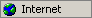
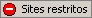
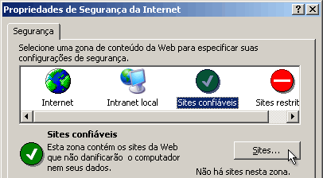
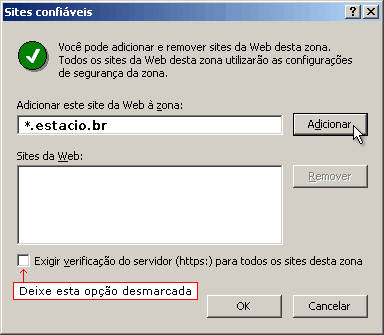

| ||
|
Passo 1
Clique duas vezes sobre o ícone Internet ou
Sites restritos no canto inferior direito do navegador conforme
ilustração abaixo.
 ou 
Passo 2
Selecione Sites confiáveis e clique no botão
Sites conforme figura abaixo.

Passo 3
Digite o endereço do site como no exemplo abaixo e
depois clique em Adicionar e Ok para confirmar.

Após seguir os passos anteriores, clique em ok
na caixa Propriedades de Segurança da Internet e clique no botão finalizar
abaixo.
|